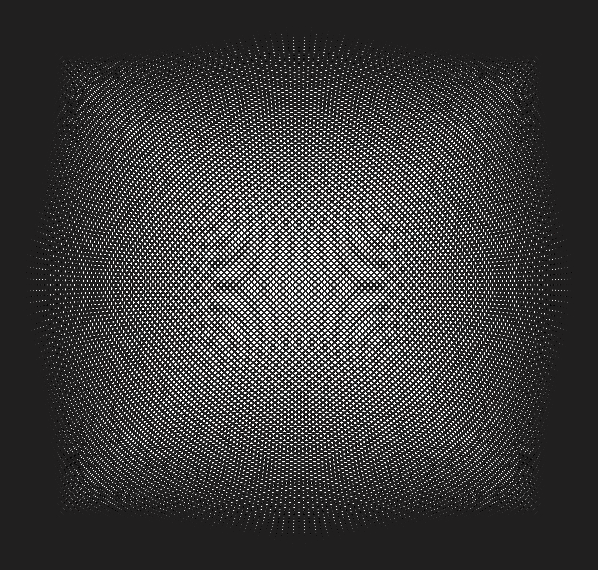
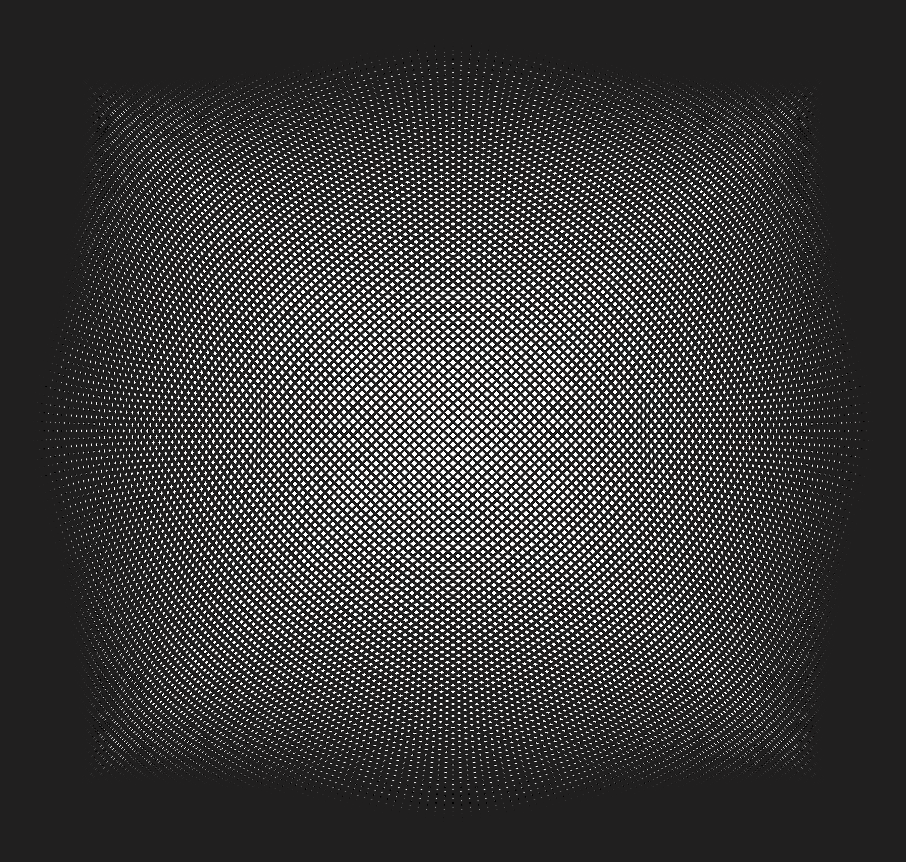

(Index)
Final major project at LCC using scripting inside of Adobe InDesign using open source library basil.js to generate artwork and layouts that would be impossible to make using the graphical user interface and traditional software workflows.
 
